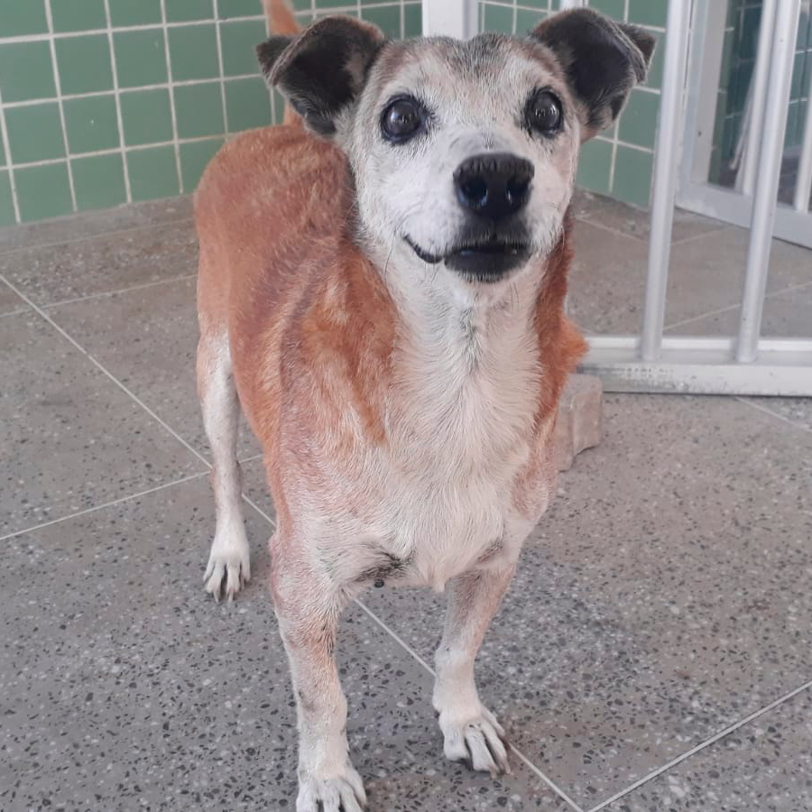
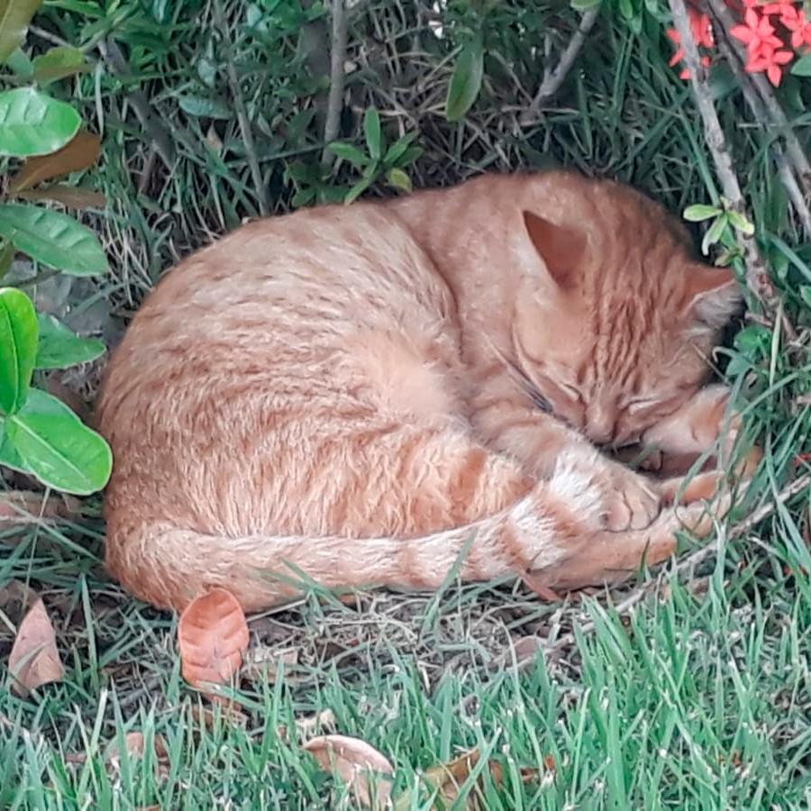
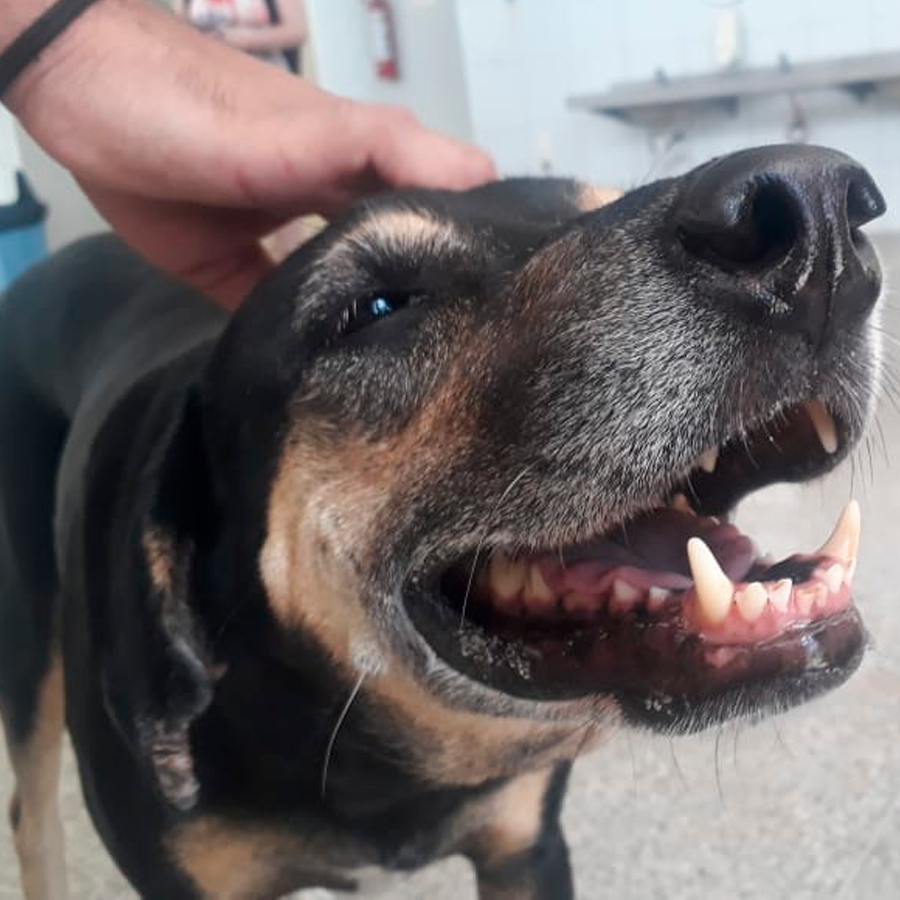
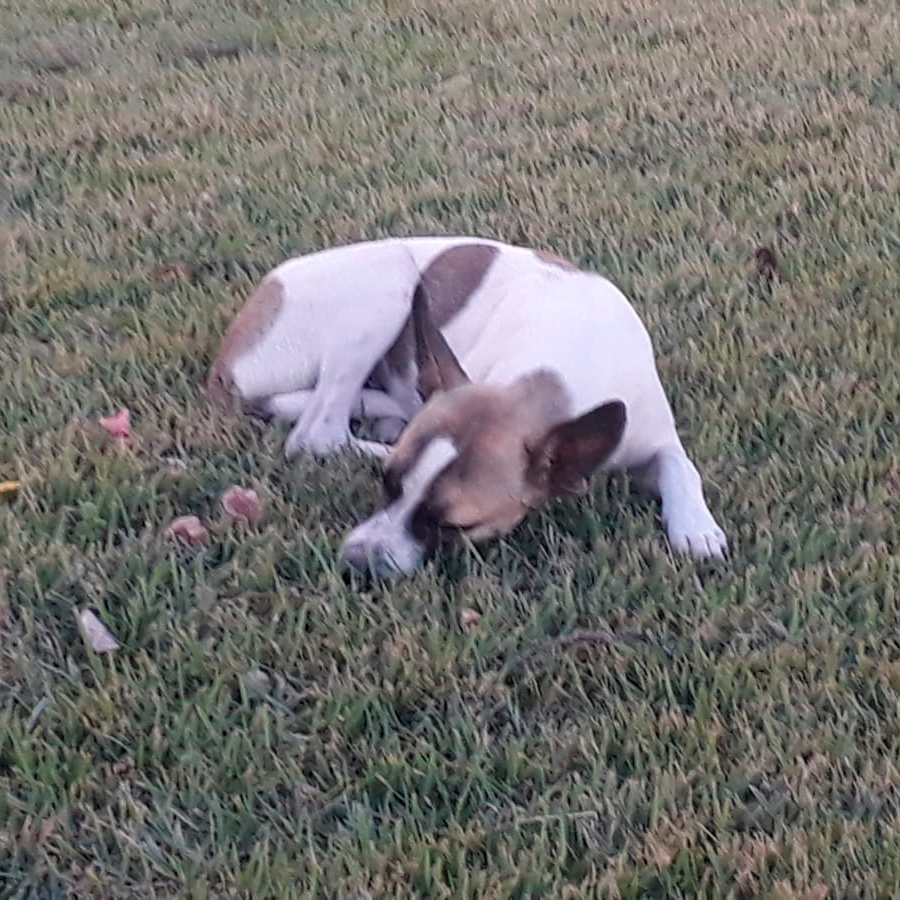

| Batata (descanse em paz) | Eloísa | Pretinha | Gatita (descanse em paz) | Perrito |
|---|---|---|---|---|
|  |  |  |  |
 |
| Cachorro | Gato | Cachorro | Gato | Cachorro |
| Masculino | Feminino | Feminino | Feminino | Masculino |
| Batata | Laranja | Preto | Branco/Preto/Laranja | Branco/Marrom |